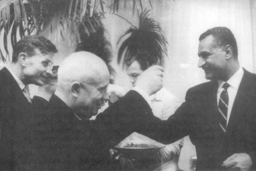

Kruşçev ve Cemal Abdul Nasır Moskova’da, 1952
1955 Cenevre Konferansı’ndaki bütün barış içinde bir arada yaşama konuşmaları temel gerçeği değiştiremezdi: Dünyanın birbirinden uzak iki süper gücü, Birleşik Devletler ve Sovyetler Birliği, coğrafi bir rekabet içine kilitlenmişlerdi. Bir taraf için kazanç olan şey, diğer taraf için bir kayıp olarak değerlendiriliyordu. 1950’li yılların ortalarında, Batı Avrupa’daki Amerikan nüfuz küresi gelişiyordu ve Amerika’nın bu küreyi askeri güçle korumaya hazır olması Sovyet serüvenciliğini caydırdı. Fakat Avrupa’daki hareketsizlik, dünyada da hareketsizlik anlamına gelmiyordu. 1955’te, Cenevre Zirvesi’nden iki ay sonra, Sovyetler Birliği pamuk karşılığında Mısır’a büyük çapta silah satışı anlaşması yaptı. Sonra, Sovyet nüfuzunun Ortadoğu’ya doğru genişlemesi için cesurca bir hareketle daha da çoğunu verdi. Mısır’da nüfuz kazanmak için ilk hareketi yapan Kruşçev, Birleşik Devletler’in Sovyetler Birliği etrafında oluşturduğu “Cordon sanitaire” [Bir ülkenin çevresinde, o ülkeyi tecrit eden ve saldırganlığını kontrol altında tutan veya nüfuzunu azaltan bir ülkeler kuşağı (mütercimin notu)] “üzerinden atlamış” oluyordu. Böylece Washington, şimdiye kadar Batı küresi içinde güvende sandığı bölgelerde de Sovyetleri kontrol etmek görevi ile karşı karşıya kaldı.
Stalin, hiçbir zaman Sovyet güvenilirliğini, gelişmekte olan ülkelerde ortaya koymaya yanaşmamıştı. Bu ülkeleri, çok uzakta ve istikrarsız, liderlerini de kontrol edilmesi zor kimseler olarak görüyordu ve Sovyetler Birliği zamanla Sovyet askeri gücünün büyümesi ile bu tutumu değişebilirse de, uzak ülkelerde serüvenlere girişecek kadar kuvvetli de değildi: 1947 gibi geç bir tarihte, o zamanlar Stalin’in en yakın danışmanlarından olan Andrei Zdanov, Ortadoğu’yu halâ birbiri ile çekişen Amerikan ve İngiliz emperyalistlerinin egemen olduğu bir bölge olarak tanımlıyordu.{710}
Sovyet liderlerinin gelişmekte olan bir ülkeye ilk silah satışlarının Arap milliyetçiliğini ateşleyeceğini, Arap-İsrail anlaşmazlığını büsbütün çığırından çıkaracağını ve Ortadoğu’da Batı egemenliğine karşı büyük bir meydan okuma olarak değerlendirileceğini anlamaması olanaksızdı. Duman dağılıncaya kadar, Süveyş krizi, Büyük Britanya ve Fransa’nın büyük devlet statüsünü ortadan kaldırdı. Bundan böyle, Avrupa dışında Soğuk Savaş surlarını ABD tek başına koruyacaktı.
Kruşçev’in açış hareketi çok ihtiyatlıydı. Sovyetler Birliği ilk silah satışlarında ortada görünmüyordu. Çünkü, sonradan bu kamuflaja da gerek görülmediyse de, işlem teknik bakımdan Çekoslovakya’nın silah satışıydı. Ortadoğu’ya Sovyet silahı satılması, Batı Avrupa’nın özellikle de Büyük Britanya’nın hassas noktasına dokunmuştu. Hindistan’dan sonra Mısır, Büyük Britanya’nın imparatorluk geçmişinin en önemli mirası idi. XX. yüzyılda, Batı Avrupa’ya petrol sevkiyatının başlıca arteri Süveyş Kanalı olmuştu, ikinci Dünya Savaşı’ndan hemen sonraki en zayıf zamanında bile, Büyük Britanya, ülkesini Ortadoğu’nun üstün gücü olarak görmüştü. Hâkimiyetinin iki dayanağı vardı: Ortak bir İngiliz-liran şirketiyle petrol gönderen İran ve stratejik üs olarak hizmet eden Mısır. Arap Birliği, 1945’te Anthony Eden tarafından Ortadoğu’da yabancı sızmalara karşı direnecek bir politik çerçeve olarak kurulmuştu. Önemli miktarda İngiliz kuvveti Mısır, Irak ve İran’da kalmıştı. Bir İngiliz subayı olan General John Glubb (Glubb Paşa) Ürdün’ün Arap Lejyonu’na kumandanlık yapıyordu.
1950’li yıllarda bu dünya dağıldı. Yeni bağımsızlıklarına kavuşmuş ülkelerin ilk kuşağının alkışları ile İran Başbakanı Musaddık 1951’de İran petrol endüstrisini millileştirdi ve Abadan’daki petrol kompleksini koruyan İngiliz birliklerinin ülkeyi terk etmesini istedi. Artık Büyük Britanya, kendisini Sovyet sınırına çok yakın bir yerde Amerikan yardımı olmadan askeri harekâta girişecek kadar güçlü hissetmiyordu ve bu yardım da yoktu. Bundan başka, Süveyş Kanalı boyunca yer alan ana üssünde bir gerileme durumunda olduğunu düşündü.
Musaddık tarafından yapılan meydan okuma, iki yıl sonra Birleşik Devletler, onu devirmek için bir hükümet darbesini teşvik edince sona erdi. (O günlerde Washington, gizli operasyonları, askeri müdahaleden daha çok hukuka uygun buluyordu.) Ancak Büyük Britanya’nın İran’daki hâkimiyeti, hiçbir zaman eski haline dönmedi. 1952’de, Büyük Britanya’nın Mısır’daki durumu da kötü idi. Bölgede yaygın olan milliyetçi ve sömürgecilik aleyhtarı havayı yansıtan bir grup genç subay, yolsuzluk yapan Kral Faruk’u devirdi. Başlarındaki kişi, Albay Cemal Abdül Nasır idi.
İnsanlarda sevgi uyandırabilen kuvvetli bir şahsiyeti olan Nasır, Arap milliyetçiliğine hitap ederek karizmatik bir nitelik kazandı. Nasır 1948’de İsrail ile yapılan savaştaki Arap yenilgisinden sonra kendisini çok aşağılanmış hissetti. Yahudi Devleti’nin kuruluşunu da Batı sömürgeciliğinin en son aşaması olarak gördü. Büyük Britanya ve Fransa’yı bölgeden atmaya kararlıydı.
Nasır’ın ortaya çıkışı, Birleşik Devletler ile başlıca NATO müttefikleri arasında uykuda olan sömürgecilik sorununu açığa çıkarttı. 1951 Nisan’ında, o zaman hâlâ muhalefet lideri olan Churchill, Ortadoğu’da ortak eylem çağrısı yaptı:
“Biz artık Akdeniz’de şimdiye kadar taşıdığımız bütün politik yükü taşıyacak, hatta bu bölgenin diplomatik kontrolünde başlıca rolü üstlenecek kadar kuvvetli değiliz. Fakat Fransa’nın da yardımı ile Birleşik Devletler ve Britanya,.. üçümüz, örneğin Mısır problemi ve Süveyş Kanalı‘nın savunulması sorunu ile baş edecek kadar güçlü bir durumda oluruz.”{711}
Ancak sıra Ortadoğu’ya gelince, Amerika, Yunanistan ve Türkiye’de oynadığı rolü reddetti; ne Avrupa politik üstünlük mirasını üstlendi, ne de sömürgecilik geleneği ile ortaklık yapılmasına izin verdi. Hem Truman, hem de Eisenhower, İngilizlerin İran veya Mısır’da askeri hareket yapmasına, bu çeşit anlaşmazlıkların Birleşmiş Milletler’ce karara bağlanması gerektiği gerekçesi ile sert bir şekilde karşı çıktı. Gerçekte, haklı olarak, Büyük Britanya’nın sömürgeci mirası ile birlikte tanımlanmak istemediler.
Ama Amerika’nın da kendi hayalleri vardı ve bunlardan birisi, kalkınmakta olan ülkelerin bağımsızlık hareketlerinin Amerikan deneyimine paralel olduğunu ve Birleşik Devletler’in sömürgecilik hakkındaki tutumunun eski Avrupa büyük devletlerinden tamamen farklı bulunduğunu gören yeni devletlerin Amerikan dış politikasını destekleyecekleri düşüncesiydi. Fakat bağımsızlık hareketlerinin liderleri, Amerika’nın Kurucu Babalan’ndan farklıydılar. Demokrasinin söylemini kullanırken, gerçekten kontrol ve dengeler sistemine inanmış olan Amerikan Anayasası’nı kaleme alanların ona bağlılığına sahip değildiler. Büyük çoğunluğu, otoriter tarzda yönetimler kurdular. Birçoğu Marksist idi. Hemen hemen hepsi, Doğu-Batı anlaşmazlığını, eski emperyalist sistem olarak tanımladıkları sistemi devirmek için bir araç olarak gördüler. Amerika, kendisini Avrupa sömürgeciliğinden ne kadar uzak tutmaya çalışsa da, Amerikan liderleri, düş kırıklığıyla, kalkınmakta olan ülkelerin, kendilerini gerçek bir ortak olarak değil, emperyalist kamptan faydalı yardımcılar olarak algıladığını gördüler.
Sonunda Amerika, her bölgede Sovyet genişlemesine karşı koymayı gerektiren sınırlandırma teorisi ile ve fiili veya olası askeri tehditlere karşı NATO benzeri organizasyonlar yaratmayı teşvik eden ortak güvenlik doktrini ile Ortadoğu’ya çekildi. Ancak Ortadoğu’daki devletler çoğunlukla Amerika’nın stratejik görüşünü paylaşmadılar. Moskova’yı, bağımsızlıklarına yönelik bir tehdit olarak değil, Batı’dan ödün koparmak için yararlı bir araç olarak düşündüler. Yeni devletlerden birçoğu, rejimlerinin komünistlerin eline geçmesinin, kendilerinden çok Birleşik Devletler için tehdit oluşturacağı izlemini yaratmayı başardılar. Bu durumda da Amerikan koruması için herhangi bir bedel ödemelerine gerek yoktu. Hepsinden önemlisi, Nasır gibi popülist yöneticiler, Batı ile birlikteymiş gibi görünmekte gelecek görmediler. Uçarı kamuoylarının, onları, yalnızca bağımsızlık için değil, demokrasiler dışında hareket özgürlüğü için de kavga verdikleri şeklinde algılamasını istediler. Bağlantısızlık, onlar için bir dış politika tercihi olduğu kadar, bir iç ihtiyaçtı.
İlk önce, ne Büyük Britanya, ne de Amerika, Nasır’ın neyi temsil ettiğini kavradılar. Her iki devlet de Nasır’ın onların politikalarına direnmesinin düzeltilebilecek bazı özel sorunlardan ileri geldiğini sandılar. Bu hipotezi sınamak için mevcut olan küçük fırsat da, demokrasilerin birbirinden farklı varsayımlarla hareket etmeleri nedeniyle bozuldu. Büyük Britanya, Nasır’ı, kendi tarihi egemenliğini kabul etmeye ikna etmek için uğraşırken, Birleşik Devletler de büyük sınırlandırma stratejisi içine çekmeye çalıştı. Sovyetler Birliği, “kapitalist çemberin” arkasından dolaşmak ve (Doğu Avrupa’da olduğu gibi) iç yönetimlerinde sorumluluk almadan onlara silah satmak yoluyla yeni müttefikler edinmek fırsatını yakaladı. Nasır, bu itici kuvvetlerin birleşmesini, değişik rakiplerini birbirine düşürmek için kullandı.
Sovyet silahlarının, dengesiz Ortadoğu’ya akıtılması bu süreci hızlandırdı. Büyük Britanya ve Amerika’nın en iyi karşı hamlesi, Nasır’ı, Sovyet silahlarının kendisine bir şey kazandırmadığını iyice anlayana kadar izole etmek ve sonra Nasır Sovyetlerle bağlantılarını terk eder veya daha iyisi, yerine daha ılımlı bir lider geçerse, o zaman cömert bir diplomatik girişim başlatmak olabilirdi. Bu, yirmi yıl sonra Enver Sedat’a uygulanan Amerikan stratejisiydi. 1955’te demokrasiler tam tersi taktiği seçtiler; Nasır’ın isteklerinin çoğunu karşılayarak onunla uzlaşmaya çaba harcadılar.
Dış güçlerin ümitleri, onları uygulamak için her çaba harcanmasında çöldeki serap gibi uçup gitti. Büyük Britanya, bölgedeki askeri mevcudiyetini ne kadar şirin göstermeye çalışırsa çalışsın, bunu bölge liderleri için hoş karşılanan bir şey yapamayacağını anladı. Amerika’nın, Nasır’ı Büyük Britanya ile birlikte Sovyet karşıtı stratejiye ortak yapmak için Ortadoğu sorunlarında İngiltere ile işbirliği yapmama şeklindeki şizofrenik politikası hiçbir zaman başarılı olamadı. Nasır’ın Sovyetlerle bağları koparması için özendirici hiçbir şey yoktu. Ona verilen Amerikan olanaklarını dengelemek için Sovyetlerden veya radikal Bağlantısızlar’dan, ya da tercihan her ikisinden benzer olanaklar sağlamaya çalıştı. Washington Nasır’ı ne kadar çok tatmin etmeğe çalıştı ise, bu kurnaz Mısırlı, o kadar çok Sovyetlere doğru kaydı ve böylece önceki konumuna dönerek Birleşik Devletler’den daha çok yardım koparmaya çalıştı.
Kısa zamanda, Sovyetler Birliği de bu Bağlantısız ülkelerle iş yapmanın yarattığı düş kırıklığını tattı. Sovyetlerin Ortadoğu’ya sızmasının ilk aşamasında her şey net kâr sayıldı. Moskova, önemsiz bir maliyetle demokrasileri savunmaya itti. Batı nüfuz bölgesine ayrılan bölgelere Sovyet mevcudiyetinin girmesi, içteki anlaşmazlıkları artırdı. Ancak zaman geçtikçe, Sovyetlerin ihtiraslı Ortadoğulu müşterileri, Moskova’yı kazancı ile kıyaslanamayacak bir büyüklükte bir tehlike içine soktu. Sovyetler Birliği bu tehlikeleri ne zaman kendi ulusal çıkarlarına bağlamak istediyse, yeni bulduğu müşterilerinin nefreti, değilse bile memnuniyetsizlikleriyle karşılaştı. Bu durum, Batı diplomasisine, Sovyetler Birliği’nin müşterilerinin amaçlarını yerine getiremediğini herkese gösterme olanağı tanıdı ve 1972’de başlamak üzere Sedat’ın Moskova’dan yüz çevirmesine yol açtı.
Büyük Britanya, Ortadoğu üzerindeki hayallerini terk etmek zorunda kalan ilk ülke oldu. Süveyş Kanalı boyunca yerleştirilmiş olan üssü, 80.000 askerden oluşan garnizonu ile İngiltere’nin son önemli imparatorluk ileri karakoluydu. Ancak Büyük Britanya, Mısır’ın muhalefetine rağmen ve Amerika’nın desteği olmadan Kanal Bölgesi’nde büyük bir kuvvet bulunduracak durumda değildi. 1954’te, Birleşik Devletler’in baskısı ile kuvvetlerini Süveyş üssünden 1956 yılında çekmeye razı oldu.
Amerikan liderleri, birbiriyle çatışan iki politikayı birbirine uydurmaya çalışıyorlardı: Ortadoğu’da bir sınırlandırma yapısı yaratmak ve Büyük Britanya’nın nüfuzundan geriye kalanları kullanmasına bir son vermek. Eisenhower Yönetimi, Türkiye, Irak, Suriye, Pakistan ve sonradan İran’dan oluşan bir Kuzey Seddi kavramı oluşturdu. NATO’nun bu Ortadoğu versiyonunun amacı, Sovyetler Birliği’ni güney sınırları boyunca çevrelemekti.
Bu kavram, İngiliz destekli Bağdat Paktı şeklinde gerçekleşti; fakat birçok yönden çatlak verdi. Bir ittifakın etkili olması için, ortak bir amacı yansıtması, ortak bir tehlike algılamış olması ve kuvvetleri bir arada toplama kapasitesi bulunması zorunludur. Bu öğelerden hiçbiri Bağdat Paktı’nda yoktu. Bölgedeki uluslar arasındaki bölünmüşlük ve düşmanlık, Sovyet yayılmacılığı korkusundan daha büyüktü. Suriye, pakta katılmayı reddetti; iki yıl paktın genel merkezliğini yapan Irak, bu sürede bile Sovyet saldırganlığından çok, Arap köktenciliğini uzlaştırmakla ilgiliydi; Pakistan güvenliğine tehdidin Sovyetler Birliği’nden değil, Hindistan’dan geldiğini düşünüyordu.
Bağdat Paktı üyelerinin askeri kuvvetleri de, bir süper güç tarafından saldırıya uğratıldığı zaman komşularına nasıl yardım edileceğine göre oluşturulmamıştı; temel amaçları iç güvenlikti. Her şeyden önemlisi, bölgedeki en dinamik kuvvet olan Nasır, Ortadoğu’da sömürgeciliği yeniden canlandırmak ve onu ve köktenci arkadaşlarını izole etmek için dolambaçlı bir manevra olarak gördüğü paktı yıkmaya kararlı idi.
Bölgedeki Sovyet nüfuzuna karşı cezalandırıcı önlemler alamayacak kadar bölünmüş olan Büyük Britanya ve Birleşik Devletler, bundan sonra Batı kampına bağlı kalmanın avantajlarını anlatarak, Mısır’ı tatlı dille Moskova’dan koparmaya çalıştılar. Bu amaçla iki politika izlediler: Mısır’la İsrail arasında barışı teşvik etmek ve Nasır’a Asvan Barajı’nı inşa etmesi için yardım etmek.
Barış girişimi, Arap köktenciliğinin başlıca kaynağının 1948’de silahların gücü ile Yahudi Devleti’nin kurulması olduğu inancına dayanıyordu. Şerefli bir barışın, bu aşağılanma duygusunu ortadan kaldıracağı düşünüldü. Fakat bu noktada, Arap köktencileri ve milliyetçileri, şerefli veya başka bir şekilde İsrail ile barış peşinde değillerdi. Onlara göre Yahudi Devleti, 2000 yıllık bir iddiaya dayanılarak ve Arap halkının sebep olmadığı olaylar dolayısıyla Yahudilerin çektiklerinin bir kefareti olarak geleneksel Arap topraklarına enjekte edilmiş yabancı bir devlet idi.
Nasır, İsrail ile gerçek bir barış yapsaydı, yani bir arada yaşamaya razı olsaydı, Arap dünyasındaki liderlik iddiasını kaybederdi. Arap ırktaşları karşısında mahcup olmamaya kararlı olan Nasır, İsrail’den, bütün Negev’den vazgeçmesini (1948’de İsrail tarafından alınan ve İsrail topraklarının yarıdan fazlasını oluşturan güney çöl bölgesi) ve 1948’de topraklarını terk etmek zorunda bırakılan yüzbinlerce Filistinli mültecinin dönmelerine izin vermesini istedi.{712}
İsrail ülkenin yarısından vazgeçmek veya devletinin ortadan kaldırılması anlamına gelen bütün Arap mültecilerinin geri dönmelerine izin vermeye hiçbir zaman yanaşmazdı, İsrail’in çıkış noktası, açık sınırlarla birlikte resmi barış antlaşması idi. Bu zararsız bir talep gibi görünüyordu; fakat aynı zamanda Arap liderleri tarafından kabul edilmesi en zor talepti de; çünkü yeni devletin devamlı olarak tanınması anlamına geliyordu, İsrail’in toprak ödünü vermeden barış istemesi ve Arap ülkelerinin barışı tanımlamadan toprak istemeleri karşısında çıkmaz, kaçınılmazdı, ilk görüşmeler, Mısır’da, Sedat’ın gelişine kadar bağlı kalınan bir yazılı metin ortaya çıkardı ve Arap dünyasının geri kalan kısmında yirmi yıl bir şey olmadı, ta ki 1993 yılının Eylül ayında Filistin Kurtuluş Örgütü ile İsrail arasında bir anlaşma imzalanıncaya kadar.
Bu arada Birleşik Devletler ve Büyük Britanya birçok konuda birbiriyle kavgalıydılar. Her ne kadar Dulles Kuzey Şeddi politikasını destekliyorsa da, Büyük Britanya’nın bunun liderliğini üstlenmesinden hoşlanmadı ve Bağdat Paktı’nın merkezinin Mısır’da olmasını istedi. Oysa Mısır, Bağdat Paktı’na karşı dişi tırnağı ile mücadele etmişti. Büyük Britanya, Nasır’ı devirmeyi yeğlerdi; Amerika her ne kadar Sovyetlerle yapılan silah anlaşmasından rahatsız ise de, onu hoş tutmanın daha akıllıca bir şey olduğunu düşünüyordu.
Parçalanmış birlikteliklerini tekrar oluşturmak endişesi ile İngiliz-Amerikan liderleri, bundan sonra dikkatlerini Asvan Barajı denilen büyük inşaat projesine çevirdiler: 111 metre yüksekliğinde ve 3.8 kilometre uzunluğundaki bu baraj, Yukarı Nil üzerinde Mısır’ın Sudan sınırına yakın bir yerde yapılacaktı. Baraj, Nil Vadisi’nin sulamasını düzenleyecekti ki, Mısır halkının yaşamı artık unutulmuş eski zamanlardan beri buna bağlı idi ve aynı zamanda Mısır’ı, her yıl olan su baskınlarına bağımlılıktan da kurtarmış olacaktı.
Nasır’ın en amansız düşmanı Anthony Eden, baraj için bir İngiliz-Amerikan ortak yardım projesini ilk ortaya atan kişiydi. Buna göre yükün aslan payını (%90’ını) Amerika taşıyacaktı. Nasır’dan kurtulmaya can atan Eden’in, Asvan Barajı’nın önde gelen savunucusu olmasının nedeni, Ortadoğu politikasının yapıcısı olarak tanınmak istemesi ve Sovyetlerin, askeri yardımlarından sonra ekonomik yardımlarla da Mısır’a sızmasını engellemek arzusu ile açıklanabilir. 14 Aralık 1955’te, Büyük Britanya ve Birleşik Devletler, barajı iki aşamada yapmak için resmi bir öneride bulundular: Hazırlık aşaması için sınırlı kaynaklar hemen hazır hale getirilecek, bu arada barajın fiili inşaatını içine alan ikinci aşama için yapılacak yardımların genişliği ve niteliği kararlaştırılacaktı.{713}
Garip bir karardı bu. İki hükümet, Nasır’ın değişmesini yeğlerken ve onun Sovyet yörüngesine kaymasından derin bir endişe duyarlarken, devasa bir mühendislik ve finansal projenin yükümlülüğünü üstleniyorlardı. Aralarında uyumsuzluk bulunan iki müttefik kendilerini şu düşünce ile rahatlattılar: ilk verilen yardım Nasır’ı kazanmaya yetmezse bile, ikinci safha Mısır’ı, tıpkı XIX. yüzyılda Süveyş Kanalı’nın inşasının, Batı’ya Mısır üzerinde mali kontrol sağlaması gibi, onlara bağımlı hale getirecekti.
Asvan Barajı projesi Nasır’ı ılımlı hale getirmek şöyle dursun, onda önemli bir adam olma duygusunu harekete geçirdi. Pazarlık araçlarını korumak için birtakım dengeleme hareketleri yapmaya başladı. Mali şartlar üzerinde çetin bir pazarlığa girişen Nasır, Arap-Israil görüşmelerinin kolaylaştırılması için Amerika’nın yaptığı ricaları geri çevirdi. Büyük Britanya, Ürdün’ü Bağdat Paktı’na katılmaya ikna etmeye çalışırken, Mısır yanlısı ayaklanmalar başladı. Bu durumda, Kral Hüseyin 1956 Mart’ında Arap Lejyonu’nun İngiliz Kumandanı Glubb Paşa’yı görevden almak zorunda kaldı.{714}
16 Mayıs’ta, Nasır, Chiang Kai-shek hükümetinden tanımasını geri çekti ve Çin Halk Cumhuriyeti ile diplomatik ilişkiler kurdu. Bu hareket, Birleşik Devletler’in ve özellikle Tayvan için büyük yükümlülükler altına giren Dulles’ın yüzüne indirilmiş bir tokat demekti. Haziranda yeni Sovyet Dışişleri Bakanı Dmitri Şepilov, Asvan Barajı’nın inşası ve finansmanı önerisi ile Mısır’a geldi. Böylece, Nasır’ın çok sevdiği süper güçleri birbirlerine karşı oynamak fırsatını yaratmış oldu.
19 Temmuz’da, Dulles bu oyuna bir son vermeye karar verdi. Mısır liderinin sorunun üzerine tüy dikercesine Komünist Çin’i tanıması, Dulles’ı Nasır’a bir ders vermeğe ikna etti. Mısır büyükelçisi, bütün Amerikan teknik yardımı tekliflerinin kabul edilmesi talimatıyla Kahire’den dönünce, Dulles Washington’un, Mısır’ın ekonomik kapasitesinin bu barajın yükünü karşılamayacağı kararına vardığını kendisine söyledi. Hiçbir yardım yapılmayacaktı.
Dulles, kuvvetli bir cevaba kendisini hazırlamıştı. Time’ın yayımcısı Henry Luce’e, Asvan Barajı kararının, “ABD diplomasisinin uzun zamandan beri yaptığı en büyük satranç hareketi olduğunu” söyledi. Nasır, “şimdi cehennemin ortasında, ne yaparsa yapsın bu, Amerika’nın lehine kullanılabilir. Şimdi Ruslara döner ve Ruslar da ona ‘hayır’ derse, bu durum Sovyetlerin son günlerde bütün dünyada yaptığı ekonomik dolandırıcılık yapısının altını oymuş olacaktır... Sovyetler Nasır’a barajını vermeyi kabul ederse, biz de Sovyet milyonları Mısır’a akıtılırken uydu ülkelerin hayat şartlarının neden bu kadar düşük olduğunu sorarız.”{715} Dulles’ın gözleminde göze çarpan eksiklik, “büyük bir hareketi” tehlikeyi göze alarak destekleme isteğinin olmaması idi. Bu, Dulles’ın özellikle Demir Perde gerisinde propagandaya olduğundan fazla önem vermek eğiliminin bir başka örneğiydi.
Barajın politik mantığı ne kadar zayıf olsa da, Amerikan yardım önerisinin geri çekiliş tarzı büyük bir krize davetiye çıkardı. Washington’daki Fransız Büyükelçisi Couve de Murville (Sonradan de Gaulle’ün dışişleri bakanı olmuştu) ne olacağını doğru olarak tahmin etti: “Süveyş üzerinde bir şey yapacaklar. Batı ülkelerine dokunmalarını sağlayacak tek yol budur.”{716}
26 Temmuz 1956’da, Nasır İskenderiye’de büyük bir kalabalığın önünde Dulles’a cevabını Arap milliyetçiliğine başvurarak verdi:
“Vatandaşlarım, içinde olduğumuz şey bir savaştır. Bu savaş, emperyalizme, emperyalist metot ve tekniklere, emperyalizmin öncüsü İsrail’e karşı savaştır...
Arap milliyetçiliği gelişmektedir. Arap milliyetçiliği zafer kazanmaktadır. Arap milletçiliği ileriye doğru gitmektedir; yolunu ve gücünü biliyor. Arap milliyetçiliği, kimin dost kimin düşman olduğunu biliyor...”{717}
Açıkça Fransa’ya çatarak kalabalığa şunu söyledi: “Hiçbir zaman Cezayir savaşının bizim savaşımız olmadığını söylemeyiz.” Konuşmasının ortasında, Nasır Süveyş Kanalı’nı yapan Fransız Ferdinand de Lesseps’in adından bahsetti. Bu, Mısır askeri kuvvetlerinin kanalın kontrolünü ele geçirmeleri için parolaydı. Böylece konuşmasının sonunda, Nasır çılgına dönen topluluğa şunu söyledi: “Şu anda size hitap ederken, Mısırlı kardeşlerinizden bir kısmı... kanal şirketini, varlıklarını ve kanaldaki gemi geçişinin kontrolünü ele geçirmeye başlamıştır. Mısır toprakları üzerinde bulunan kanal... Mısır’ın bir parçasıdır ve mülkiyeti Mısır’a aittir...”{718}
Süveyş krizinin başlangıcını belirleyen demokrasiler arasındaki perspektif farklılığı, onların bu olaya tepkisini de etkiledi. Uzun bir bekleyişten sonra bir yıl önce başbakanlık makamına yükseltilen Eden, yaratılış bakımından baskı altında karar vermeye alışık değildi. Churchill’in halefi olmak yeteri kadar ağır bir yüktü; fakat bu durum, onun psikolojik ve gerçekte fiziksel zayıflığına ters düşen güçlü adam imajına sahip olması nedeniyle daha da ağırlaştı. Birkaç ay önce önemli bir ameliyat geçirmişti ve devamlı ilaçla tedavi devresi içinde idi. Hepsinden önemlisi, Eden gelişme yıllarının eseriydi. Güzel Arapça konuşan Eden, Ortadoğu’nun İngiliz hâkimiyetinde olduğu dönemde yetişmişti ve gerekirse tek başına Nasır’ı durdurmaya kararlı idi.
Fransa Nasır’a karşı daha da düşmanca hisler besliyordu. Fransa’nın Arap dünyasında ilgilendiği ülkeler eskiden Fransa’nın himayesinde olan Fas ve Cezayir idi ve Cezayir, Metropolitan Fransa’nın bir milyon Fransız’ı barındıran bir eyaletiydi. Her iki Kuzey Afrika ülkesi de bağımsızlık peşindeydiler ve Nasır’ın politikaları onlara duygusal ve politik destek sağlıyordu. Sovyet silah anlaşması, Mısır’ın Cezayirli gerillalara gönderilecek silahlar için bir yol olması olasılığını da ortaya çıkardı. Fransa’nın yeni Başbakanı Guy Mollet, “Bütün bunlar Nasır’ın işi” dedi. “Nasıl Hitler’in politikası Mein Kampf’ında yazılıysa, Nasır da İslam’ın fetihlerini yeniden canlandırmak ihtirası içindedir.”{719}
Hitler benzetmesi, pek isabetli değildi. Nasır’ın, Mısır’ın yabancı ülkeleri fethetmekte kararlı olduğunu ima ederek, Ortadoğu sınırlarına Arap milliyetçilerinin tanımadığı bir geçerlilik veriyordu. Avrupa’daki sınırlar, Balkanlar hariç, esas olarak ortak bir tarihi ve kültürü yansıtmaktadır. Bunun aksine Ortadoğu’daki sınırlar, geniş çapta yabancılar, özellikle de Birinci Dünya Savaşı’ndan sonra bölgede hâkimiyetlerini kurmak isteyen Avrupalılar tarafından çizilmiştir. Arap milliyetçilerinin zihninde, bu sınırlar, Arap ulusunu birbirinden ayırmakta ve ortak Arap kültürünü inkâr etmekteydi. Bu sınırları silmek, bir ülkenin diğer bir ülkeye egemen olması demek değildi; bu, Cavour’un İtalya’yı kurması ve Bismarck’ın, birçok bağımsız devletten bir Almanya yaratması gibi, bir Arap ulusu yaratma yoluydu.
Benzetme yerinde olmamakla beraber, Eden ve Mollet bir kez yatıştırma politikasına karşı bayrak açınca, artık geri çekilmeyecekleri açık olmalıydı. Onlar her şeyden önce, yatıştırma politikasını büyük bir günah olarak gören ve Münih’i devamlı bir yüz karası olarak hatırlayan bir kuşağa mensuptular. Bir lideri Hitler’le veya hatta Mussolini ile kıyaslamak demek, uzlaşma olasılığının ötesine geçmek demekti. Ya başarılı olacaklar, ya da en önemlisi kendi gözlerinde bütün yönetim iddialarını kaybedeceklerdi.
Eden ve Mollet’in Süveyş Kanalı’nın millileştirilmesine tepkileri çok şiddetli oldu. Eden, Nasır’ın konuşmasının ertesi günü Eisenhower’a bir telgraf gönderdi: “Sağlam durmazsak, bizim ve sizin Ortadoğu’daki nüfuzumuzun nihai olarak ortadan kalkacağına inanıyoruz.”{720} Üç gün sonra, Avam Kamarası’nda herhangi bir çekilme olasılığını tamamen kapadı:
“Bu büyük uluslararası suyolunun geleceğinin, olayların gösterdiği gibi, onu ulusal politika amaçları için kullanabilecek tek bir devletin yönetimine hiçbir kontrol olmadan bırakılması anlamına gelen hiçbir düzenleme Majesteleri Hükümetince kabul edilemez-”{721}
Fransa da en az İngiltere kadar kararlıydı. 29 Temmuz’da, Londra’daki Fransız büyükelçisi İngiliz dışişleri bakanına, Fransa’nın kuvvetlerini İngiliz kumandanlığı emrine vermeye ve birliklerini Cezayir’den çekerek Mısır’a karşı ortak harekâta sokmaya hazır olduğunu bildirdi.{722}
Dulles, fikir alışverişi için 1 Ağustos’ta Londra’ya geldiği zaman bu görüşleri paylaştığı izlenimini verdi. Herhangi bir ulusun, hele bu ulus Mısır ise, kanalı kontrol etmesinin kabul edilemeyeceğini ilan etti:
“Nasır’ın yutmaya çalıştığı şeyi geri çıkarmasını sağlayacak bir yol bulunmalıdır... Kanal’da uluslararası bir operasyon lehinde kamuoyu oluşturmak için gerçek bir çaba harcamalıyız. Nasır’a karşı o kadar düşmanca bir kamuoyu oluşmalı ki, o kendisini izole edilmiş hissetmeli. Sonra askeri harekâta girişilirse, bu daha başarılı olacak ve acele ile yapılandan daha az ciddi ters etkileri olacaktır.”{723}
Kanaldan serbest geçiş için uluslararası bir sistem kurmak üzere yirmi dört başlıca denizci ülkenin katılımıyla on beş gün içinde Londra’da başlayacak bir Deniz Konferansı toplanmasını önerdi.
Dulles’ın konferans çağrısı, şaşkınlık yaratan ve Büyük Britanya ve Fransa için aşağılayıcı bir sürecin başlangıcı oldu. Dulles’ın açış sözleri bile, sert dil kullanılması ile zaman öldüren diplomasinin birleştirilmesi için bir çaba niteliğindeydi. Kısa zamanda, müttefiklerin kriz hakkında aynı görüşü paylaşmadıkları su yüzüne çıktı. Eden ve Mollet, Nasır’ın devrilmesini veya aşağılanmasını bir amaç olarak görüyorlardı. Eisenhower ve Dulles ise, krize, Arap dünyası ile uzun vadeli ilişkiler açısından bakıyorlardı. Her iki taraf da hatalı önyargılardan yola çıkıyorlardı. Eden ve Mollet, Nasır devrilirse durum onun iktidara gelmesinden önceki duruma dönecekmiş gibi davranıyorlardı; Eisenhower ve Dulles ise, Nasır olmazsa, bölgedeki başka bir milliyetçi liderin NATO benzeri bir Ortadoğu güvenlik sistemine ikna edilebileceğine inanıyor gibi görünüyorlardı. Aynı zamanda, Nasır’a karşı askeri bir harekâtın Arap milliyetçiliğini ateşleyeceği ve bu durumun Ortadoğu’daki Batı nüfuzunu bir kuşak boyunca mahvedeceği görüşünde idiler. Bu, kanal üzerindeki kontrolü kaybetmekten daha karanlık bir senaryoydu.
Bu varsayımlardan hiçbirisi doğru çıkmadı. Nasır öncesi Mısır artık yoktu. Nasır’ı kendilerine örnek alan diğer milliyetçi liderler de sınırlandırma politikasının güzel sözlerine karşı bağışıklığa sahiptiler. Ellerindeki esas pazarlık kozu, Soğuk Savaş’ın kendisi idi. Onu, lanetledikleri derecede de kullandılar. Ayrıca gerçek sorun, Arap milliyetçiliğini daha da alevlendirecek şeyin, Nasır’ın zaferi mi, yoksa yenilgisi mi olduğuydu.
Tamamen analitik bir görüş açısından hareket edildiğinde, Amerika’nın, Nasır tipi militan milliyetçiliğin, yapıcı bir Ortadoğu politikası için başa çıkılmaz bir engel oluşturduğu hakkındaki İngiliz ve Fransız görüşünü paylaşması gerekirdi. Sovyet silahlarına bağımlılığın bir işe yaramadığının gösterilmesi, kalkınmakta olan dünyada onlarca yıldan beri görülen ayaklanmaları engelleyebilirdi. Bu görüş açısından, Nasır’ı sindirmek arzu edilebilirdi. Fakat, Birleşik Devletler onun yenilgisini sağladıktan sonra, İngiltere ve Fransa’nın sömürge egemenliğini tekrar kurmalarına katkıda bulunamazdı. Eğer kesin olarak gerekli ise, Amerika’nın müttefiklerinden ayrılması gereken zaman Süveyş krizinin başladığı zaman değil, onun başarılı sonucunun alındığı zaman olmalıydı. Sovyet desteğine dayanmanın Mısır için bir felaket olduğu gösterildikten sonra, Nasır’ın yerine geçecek daha ılımlı bir liderin makul milliyetçi amaçlarının desteklenmesi de gerekirdi ki 1970’li yıllarda Amerika’nın Sedat’a yaptığı buydu.
Ancak demokrasiler bu kadar karışık stratejilere hazır değildiler. Büyük Britanya ve Fransa, Nasır’ı devirmenin ön şartı olarak, yerine geçecek daha ılımlı lidere onun istediklerini vermeyi kabul etmediler. Amerika, iki yakın NATO müttefikinin Büyük Devlet imajına zarar vermeden, yeni şartlara kendilerini ayarlamalarına izin verilmesinin, kendi politikası bakımından ne kadar önemli olduğunu anlayamadı. Çünkü bir kez bir ulusun kendi hakkında sahip olduğu imaj tahrip edilirse, onun önemli uluslararası rol oynamak isteği de tahrip edilmiş olur. Bu nedenle, Maliye Bakanı Harold MacMillan Büyükelçi Robert Murphy’ye (Dulles’ın temsilcisi) “Büyük Britanya şimdi Nasır’la hesaplaşmazsa, yakında başka bir Hollanda olacaktır”{724} dedi. Ancak köktenci milliyetçileri kazanmak isteyen Amerikan liderleri, ilk önce Büyük Britanya ve Fransa ile diplomatik işbirliğinden kaçındılar, sonra açıkça onlara karşı tavır koydular ve onların Ortadoğu olaylarına şekil verme kapasitelerinin sınırlarını gösterdiler, başka bir deyişle Büyük Devlet olarak rollerinin bittiği gerçeğini onlara kabul ettirdiler.
Kanal rejimini hukuki bir sorun olarak kabul eden Dulles, denizyollarının olası kesilmesi üzerinde çalışmalarını yoğunlaştırdı ve kanaldan serbestçe geçişe karşı olan engelleri kontrol etmek için verimli bir hukuki formülle geldi. Ancak Eden ve Mollet, Süveyş Kanalı’nın millileştirilmesini kabul etmemekte kararlı idiler; bu durumu, Nasır’ı devirmek veya en azından onu aşağılamak için bir bahane olarak kullanmaya çalıştılar. Nasır, oldubittiden sonra bütün ihtilalcilerin yaptığı gibi zaman kazanmaya çalıştı. Süveyş’teki durum ne kadar uzun müddet korunursa, özellikle kuvvet kullanmak yoluyla aksini yapmak o kadar zor olacaktı.
Eisenhower, Dulles’ın Londra’da açıkça desteklediği Süveyş Kanalı’ndan serbest geçiş prensibini uygulamak amacıyla da olsa, kuvvet kullanmasına şiddetle karşı idi. Dulles, Londra’yı ziyaretinde Eden’e Başkan Eisenhower’dan bir mektup getirmişti. Mektupta, “şu anda kuvvet kullanmayı düşünmenin akıllıca bir şey olmadığı” vurgulanıyordu. Eisenhower, tek taraflı İngiliz hareketinin, Amerika’nın NATO’yu destekleme arzusunu tehlikeye sokacağını ve Amerika’nın müttefiklerinin Moskova’nın merhametine terk edileceğini ima edecek kadar ileri gitti. Mektupta, İngiltere krizi çözümlemek için bütün barış yollarını denediğini göstermeden savaş çıkarsa, bu durumun “halkımızın Batılı müttefiklerine karşı hislerini ciddi bir şekilde etkileyeceği” belirtiliyordu. “Abartmak istemiyorum, fakat sizi temin ederim ki, bu durum, en beklenmedik sonuçlara varabilecek şekilde yoğunlaşabilir.”{725}
İlk bakışta, birçok savaş zamanı deneyimini birlikte yaşayan kimseler tarafından yönetilen Büyük Britanya ve Birleşik Devletler kadar birbirine ters düşme olasılığı az olan iki devlet bulunamazdı. Eden, Eisenhower’ın tek taraflı İngiliz ve Fransız harekâtı hakkındaki kuşkularını, açık bir muhalefete dönüştürebileceğine inanamazdı. Eisenhower ise Fransa ve Büyük Britanya’nın, sonuçta Amerika’nın desteği olmadan bir harekete girişmeye cesaret edemeyeceklerine inanıyordu, İngiliz ve Amerikan liderleri, savaş zamanı ortaklığı ve kişisel dostluklarla kuvvetlenmiş “özel ilişkilerine” çok değer veriyorlardı. Fakat, Süveyş krizi sırasında kişiliklerinin farklılığı nedeniyle birbirlerine muhalefet ettiler, İngiliz liderler, Dulles’ı, antipatik bir görüşmeci olarak buluyor, Eden ise ondan hoşlanmıyordu.
John Poster Dulles, aile geleneği ve kişisel ilgisi dolayısıyla dışişleri bakanlığına çok uygun görünüyordu. Büyükbabası John Poster, Başkan Benjamin Harrison’a dışişleri bakanı olarak hizmet etmişti; dayısı Robert Lansing, Versay Barış Konferansı’nda Wilson’un dışişleri bakanı idi. Her ne kadar John Poster Dulles orta yaşına kadar bir şirket avukatı ise de, devamlı olarak zihnini meşgul eden konu dış politika idi.
Amerikan dışişleri bakanları, geleneksel olarak Amerika’nın istisnai durumunun ve değerlerinin evrensel geçerliliğini iddia ederler. Dulles da farklı değildi. Fakat Amerika’nın istisnai konumu, felsefeden çok dine dayanıyordu. Uluslararası ilişkilerde ilk deneyimi, dünya barışını gerçekleştirmekle uğraşan bir Protestan Komisyonu’nun başı olarak bulunması idi. Bir keresinde gururla şöyle söyledi: “Dışişleri Bakanlığı’nda kimse, İncil hakkında benim kadar bilgiye sahip değildir.”{726} Sert presbiteryen inancı prensiplerini Amerika’nın günlük dış politikasına uygulamaya çalıştı. 1950’de şöyle yazmıştı: “Şuna inanıyorum ki, bizim burada politik düşünce ve uygulamalarımızın, insanın yaradılışının ve kaderinin Tanrı’nın elinde olduğu inancını daha sadık bir şekilde yansıtmasına ihtiyacımız var.”{727} Her ne kadar Dulles İngilizlerin Gladstone kuşağının kolaylıkla tanıyacağı bir klasik Amerikan fenomenini temsil ediyorsa da, İngiliz liderlerinin harp sonrası kuşağı, onun doğruculuğuna kızıyorlardı ve onu, spritüal değil, ikiyüzlü buluyorlardı.
Ne yazık ki, Dulles’in karşısındaki görüşmecilerle zaman zaman vaazda bulunur şekilde konuşma alışkanlığı, dışişleri hakkındaki üstün bilgisine ve özellikle Sovyet sisteminin dinamikleri hakkındaki derin analizlerine gölge düşürüyordu. Churchill, Dulles’ı “asık yüzlü bir püriten, bir ağızla lekelenmiş büyük, beyaz ve gözlüklü bir yüz” diye tanımlardı ve daha neşeli anlarında ondan ara sıra “Dullith” diye söz ederdi. Eden, başından beri Dulles’a güvenmezdi. 1952’de, Eisenhower Dulles’ı dışişleri bakanı olarak atamadan önce, Eden’in bir meslektaşına şöyle söylediği biliniyor: “Onunla çalışabileceğimi sanmıyorum.”{728}
Dulles’ın, kendisini büyük ölçüde etkili kılan birçok özelliği vardı. Çalışma ahlakı ve prensiplere bağlılığı Eisenhower’ı etkilemişti. Konrad Adenauer Dulles’ı, tanıdığı insanlar içinde “en büyük adam” ve “sözünü tutan”{729} birisi olarak görürdü. Dulles’ın katı iki kutuplu dünya kavramı, kandırılmaya ve Moskova’ya ödün vermeye karşı uyanıklığı ve asık yüzlü kararlılığı, Adenauer’e ve ayrı bir Sovyet-Amerikan pazarlığından korkan diğer liderlere onu sevdirdi.
Ancak Londra’da, Dulles’ın daha yüksek ahlaklılık ricaları, Londra ve Washington’un artan bir şekilde birbirine ters düşen perspektiflerini daha da belirgin hale getirdi. Dulles, Büyük Britanya’nın ve Fransa’nın açıklanan hedeflerini yüksek sesle desteklemişse de, yine tutarlı bir biçimde bu hakları elde etmek için kuvvet kullanılmasına karşı çıkmıştır. Krizin üstesinden gelmek için fikir üretmekte olağanüstü yaratıcıysa da, daha yakından bakıldığında bunlar, İngiliz-Fransız savaş yönelimini körleştirmeye yönelik zaman israfına yol açan önerilere dönüşmüştür. Dulles kendi önerileri üzerinde ısrar etmeye hazır olsaydı, bunlar Süveyş Kanalı sorununa pratik bir çözüm olabilirlerdi. Belki Büyük Britanya ve Fransa’nın tam istediği gibi olmayacaktı; fakat onların razı olabilecekleri bir sonuç elde edilebilirdi.
Deniz Konferansı toplanması önerisi Nasır tarafından reddedildi. Dulles kuvvet kullanımını reddettiğinde Amerika’ya henüz dönmüştü. 3 Ağustos’ta şunları söyledi:
“Biz... şiddeti şiddetle karşılamak istemiyoruz. Her şeyden önce, konu ile hayati derecede ilgili birçok devletin düşüncesini öğrenmek istiyoruz. Çünkü inanıyoruz ki, ilgili bütün ülkeler, Mısır dâhil, 1888 tarihli uluslararası anlaşmanın tarafı olan veya onun hükümleri sonucunda bazı çıkarlara sahip olan devletlerin düşüncesine saygı göstereceklerdir.”{730}
Moralite ile retoriğin, Dulles’ın kuvvet kullanılmasını reddetmesi gerçeğini değiştirememesi, müttefiklerin diplomasisini bir çıkmaz sokağa götürüyordu. Nasır’ın, Dulles’ın kanal rejimi önerisine ikna edilebilmesi için tek yol, reddederse İngiliz ve Fransız askeri müdahalesi ile onu tehdit etmekti. Ancak Dulles, kanalın uluslararası kontrolü için yaptığı planların her birini, kuvvet kullanımını yasaklayan bir ifade ile dengelemek istedi ve bu da Nasır’ın bunları reddetmesine yolu açmak demekti.
Dulles, Büyük Britanya ve Fransa’nın, Nasır’ın ortadan kaldırmaya çalıştığı 1888 İstanbul Sözleşmesi ile kurulan rejinin imzacıları olan sekiz devlet dâhil Süveyş Kanalı’nın başlıca kullanıcıları olan yirmi dört devletin katılması ile toplanacak olan konferans çağrısına katılmıştı. Birleşik Devletler, on sekiz ülkenin çoğunluğu ile yeni bir kanal rejimi önerisi lehine oy kullandı. Bu rejim, Mısır’ın egemenliğini ve Mısırlı personelin katılımını kabul ediyor; fakat kanalın de facto yöneticilerini, konferansa katılanlar olarak belirliyordu. Çare üretmek bakımından çok verimli olan Dulles, bunları uygulamak için kamuoyu dışında herhangi bir yaptırıma taraftar olmadı. Önerileri ile bunların uygulanmaması halinde ne yapılacağı sorunu arasında çelişkiyi reddeden Dulles, sonunda moral ikna yolunun Nasır’ı boyun eğmeye razı edeceği üzerinde ısrar etti. Görüşüne göre çoğu insan:
“...insanlığın düşüncelerine dürüstçe bir saygı gösterir... Buna inandığım için eminim ki, bu konferanstan öyle bir moral güce sahip bir karar çıkacak ki, hepimiz Süveyş Kanalı’nın gelecek yıllarda da, son yüz yılda olduğu gibi, insanlığın yararına olarak barış içinde hizmet edeceğine emin olabileceğiz.”{731}
Görüldüğü gibi, fiziksel baskının reddedildiği oranda moral baskı da işe yaramadı. 10 Eylül’de Nasır, Londra Deniz Konferansı önerisini reddetti.
Üç gün sonra, Dulles başka bir dâhiyane bir öneri ile geldi. Bu kez, Kanal’ı işletmek için ve geçiş ücretlerini Mısır’ın karasuları dışında, kanalın her iki ucundaki Port Sait ve Süveyş limanları açığında denizin üzerinde kurulacak karakol noktalarında tahsil edileceği bir Kullananlar Birliği önerdi. Nasır bunu da kabul etmezse, Kanalı Kullananlar Birliği onsuz yoluna devam edecek, eğer kabul ederse kanal gelirleri üzerindeki kontrol uluslararası bir organa bırakılacaktı. Bu karışık plan, Dulles Deniz Konferansı’nda olduğu gibi kendi önerisini baltalamasaydı işleyebilirdi. 2 Ekim’deki basın toplantısında bir kez daha kuvvet kullanılmasını reddetti. Fırsattan yararlanarak, Eden’in NATO’nun Süveyş tipi krizlerle de ilgilenmesi önerisinin uygunsuz olduğu konusunda da ona ders verir gibi konuştu:
“Süveyş Kanalı problemine yaklaşımda bazı farklar vardır. Bu fark, belki de en temel noktadadır. Atlantik Paktı bölgesinde olduğu gibi, bazı bölgelerde bu üç devlet antlaşmalarla birbirine bağlıdır... buralarda üçü... birliktedirler.
Başka bazı problemler başka bölgelerle ilgilidir ve öyle veya böyle sömürgecilik denilen sorunla bağlantılıdır. Bu problemlere ilişkin olarak, Birleşik Devletler bir çeşit bağımsız bir rol oynar.”{732}
Dulles’ın hukuki yorumu, yeter derecede geçerliydi; fakat gelecekte ters bir durum ortaya çıkacaktı. Çünkü Amerika’nın müttefikleri, Kore’de ve diğer “bölge dışı” senaryolarda, Amerika onların desteğine gereksinim duyduğu zaman, aynı argümana başvuracaklardı. Böylece, 1973 Ortadoğu Savaşı’nda, Avrupalı müttefikler, Amerika’nın İsrail’e havadan yaptığı hava ikmalinin toprakları üzerinden yapılmasına izin vermeyi reddederken Süveyş’teki konumu tersine çevirdiler. Bundan böyle, NATO yükümlülüklerinin kesin bir şekilde ittifak alanı dışında kullanılmasına izin vermeyecek olan Amerika’nın müttefikleri olacaktı. 1956’da Büyük Britanya’yı ve Fransa’yı çok kızdıran şey Dulles’ın hukuki yorumu değil, Ortadoğu’da Birleşik Devletler’in hayati derecede önemli çıkarlarını, Avrupalı müttefiklerinden temelden farklı bir şekilde tanımlamasıydı.
Bu durum özellikle Londra’yı sinirlendiriyordu; çünkü Dulles’ın basın toplantısından sadece bir gün önce, Eden Eisenhower’a gönderdiği bir telgrafta sorunun artık Nasır değil, Sovyetler Birliği olduğunu yazmıştı:
“Nasır’ın, tıpkı Mussolini’nin Hitler’in avucunun içinde olması gibi, bundan hoşlansanız da, haşlanmasınız da, Rusya’nın avucunun içinde olduğu hususunda kafamızda hiçbir kuşku yok. Mussolini’ye karşı gösterilen zafiyet ne kadar etkisiz olduysa, Nasır’ı yatıştırmak için gösterilecek zayıflık da o kadar etkisiz olacaktır.”{733}
Eden’e göre, Dulles’ın sözleri, Amerika’nın, Mısır’a nihai tehlikenin Sovyetler Birliği’nden geldiği hakkındaki görüşünü kabul etmediği anlamına geliyordu. Eden, Mısır sorununu sınırlandırma politikası çerçevesine sokmayı isterken, Dulles bütün işi, Birleşik Devletler’in moral safiyetini korumak kararlılığı ile dokunmak istemediği karışık bir sömürgecilik sorunu imiş gibi silip atıyordu.
Dulles’ın oynadığı oyunun ne kadar tehlikeli olduğundan habersiz olduğuna inanmak zordur. Her ne kadar Dulles, Amerikan kamuoyunun, en iyi, yüksek düşünceli, dürüst ve ahlaki açıklamalara karşılık vereceğine inanmaktaysa da, aynı zamanda büyük bir pratik deneyime de sahipti. Süveyş krizi esnasında hareketlerini açıklayan bir beyanda bulunmadı. Ancak Süveyş krizi sırasında iki birbirine ters eğilim arasında kaldığını düşünmek akla yakındır. Komünizme karşı tutumu bilinen Dulles’ın, Sovyetlerin Ortadoğu’ya sızmasının yaratacağı tehlike konusunda Eden ve Mollet’nin analizleri ile aynı görüşte olması büyük bir olasılıktı. Bu, Nasır’ın niyetleri hakkındaki yorumunun Eden’inkinden farksız olmasını ve Asvan Barajı hakkındaki acele ve sert kararının niçin İngiliz hükümeti için bile bir sürpriz olduğunu (ki genel bir uyan almıştı) açıklamaktadır.
Aynı zamanda Dulles, deneyimli bir askerin olabileceği kadar amansız bir şekilde savaşa karşı olan bir başkanın dışişleri bakanı idi. Eisenhower güç dengesinin nüansları ile ilgili değildi; Ortadoğu’da küresel dengeye karşı uzun vadeli bir tehlike mevcutsa bile, Amerika’nın, sonradan ve kendi varlığı tehlikeye girmeden önce direnebilecek kadar kuvvetli olduğuna inanıyordu. Eisenhower’a göre, Süveyş krizi kuvvet kullanılacak kadar büyük bir tehlike oluşturmuyordu. Dostça gülümsemesi yine de devam ediyordu; çok kuvvetli bir kişiliği vardı; fakat karşı gelindiği zaman o kadar sevimli değildi.
Dean Acheson’un bir keresinde söylediği gibi, bir dışişleri bakanının etkili olması kimin başkan olduğunu bilmeye bağlıdır. Dulles kuşkusuz biliyordu; ancak Eisenhower’ı sevimli bir şahsiyet olarak tanıyan Eden ve Mollet bilmiyorlardı. 2 Eylül’de Eisenhower’ın deniz konferansıyla ilgili olarak Eden’e yazdığı ve kuvvet kullanılması karşısında bir kez daha uyarıda bulunduğu mektubundaki işareti görmemezliğe geldiler:
“...Ortadoğu ve Kuzey Afrika halkları ve bir dereceye kadar tüm Asya ve Afrika halkları, Batı’ya karşı öyle birleşebilirler ki, korkarım üzerinde bir kuşak, hatta Rusların zarar verme yeteneğini de göz önünde tutarsak bir yüzyıl geçmeden, bu düşmanlığın üstesinden gelinemez.”{734}
Dulles, sert Eisenhower ile kızgın bir Avrupalı müttefikler grubu arasında kaldı. Eden ve Mollet, artık geri dönülmeyecek noktada idiler ve Dulles’ın açıklanan hedefleri ile bu hedefleri gerçekleştirmek için pratik araçların kullanılmasını birçok kez reddetmesi arasındaki tutarsızlığa çok kızıyorlardı. Eisenhower’ın kuvvet kullanılmasına ne kadar kuvvetli bir şekilde karşı olduğunu ve onun görüşlerinin ne kadar egemen olduğunu anlamadılar. Dulles için, müttefikleri ile Nasır arasındaki farklılık, başkan ile başkanın Avrupa’daki şahsi dostları arasındaki farklılık kadar önemli değildi. Yeteneği ile bu aradaki açıklığı kapatmaya çalışırken, zamanın, Eisenhower’ın veya onların durumunu değiştireceğini veya Nasır’ı herkesi çıkmazdan bir anda kurtaracak yanlış bir hareket yapmaya yönelteceğini ümit ediyordu. Bunun yerine, Fransa ve Büyük Britanya’nın her şeyi tehlikeye atan tek bir zar atışını göze almalarına neden oldu.
Dulles’ın taktiklerinin çıkmazı, 13 Eylül’de yapılan basın toplantısında bir gazetecinin sorusu ile özetlenmiş oldu: “Sayın Bakan, Birleşik Devletler’in kuvvet kullanılmayacağı yolunda önceden yapılan açıklaması ve Sovyet Rusya’nın Mısır’ı propagandası ile desteklemesi karşısında, bütün kozlar Bay Nasır’ın elinde toplanmış olmuyor mu?”{735} Her ne kadar Dulles, moral kuvvetin galip geleceği şeklinde belirsiz bir cevap verdiyse de, soru tam yerinde sorulmuş bir soruydu.
Demokrasiler arasındaki büyüyen gedik, Kremlin’in ortadakileri arttırmasına neden oldu. Washington’u afallatan Kremlin, Asvan Barajı’na Batı’nın yapacağı yardımı kendi kaynaklarından karşılamaya başladı ve Ortadoğu’ya silah sevkiyatını arttırdı. Gürültücü Kruşçev, Yugoslav büyükelçisine şunları söyledi:
“Unutmayın ki, savaş başlarsa bütün desteğimiz Mısır’a olacaktır. Oğlum gelip Mısır’da gönüllü olarak savaşmak istediğini söylerse, onu gitmesi için teşvik ederim.”{736}
Dulles’ın ikinci kez kuvvet kullanılmasını engelleyen 2 Ekim’deki basın toplantısından sonra ümitsiz duruma düşen Büyük Britanya ve Fransa, bu işi kendi başlarına yapmaya karar verdiler, İngiliz ve Fransız askeri müdahalesi, artık birkaç taktik hareket ötedeydi. Bunlardan birisi, baştan beri garip bir rol üstlenen Birleşmiş Milletler’e son başvuruyu yapmaktı. Başlangıçta, Büyük Britanya ve Fransa, Amerikan desteği ile Bağlantısızlar grubunun Mısır’ı tutması korkusu nedeniyle Birleşmiş Milletler’e başvurmaktan tamamen kaçınmak istedi. Ancak diplomatik sınırın sonuna yavaş yavaş yaklaşırken, Fransa ve Büyük Britanya, dünya teşkilatının faydasızlığını ve bu nedenle kendi başlarına hareket etmekten başka çare kalmadığını herkese göstermek için formalite icabı olarak Birleşmiş Milletler’e başvurdu. Böylece Birleşmiş Milletler, uluslararası anlaşmazlıkları çözen bir vasıtadan, kuvvete başvurulmadan önce aşılması gereken bir engele, bir anlamda kuvvet kullanmak için bir mazerete dönüşmüş oluyordu.
Beklenmeyen bir şekilde ve kısa bir müddet için Birleşmiş Milletler canlandı. Mısır, İngiliz ve Fransız dışişleri bakanları ile yapılan özel görüşmeler, Deniz Konferansı’nın çoğunluğunun görüşüne çok yakın altı prensip üzerinde anlaşma sağladı. Bir Mısır işletme heyeti ve bir de denetleme işi için Kanalı Kullananlar Heyeti kuruldu, İki heyet arasında anlaşmazlıklar, hakemlik yoluyla çözülecekti. Eisenhower, 12 Ekim’de televizyon seyircileri önünde yaptığı bir konuşmada sevinçliydi:
“Bir açıklama yapmak istiyorum. Bu gece Amerika’ya yapabileceğim en iyi açıklamayı yapacağım.
Süveyş anlaşmazlığının çözümünde bugün öğleden sonra sağlanan ilerleme çok memnuniyet veren bir gelişmedir. Mısır, İngiltere ve Fransa, dışişleri bakanları aracılığıyla bir araya gelerek üzerinde görüşme yapılabilecek birtakım prensipler üzerinde görüş birliğine vardılar. Öyle görünüyor ki, büyük bir kriz artık geride kalmıştır.”{737}
Her ne kadar Eisenhower tam olarak “barış sağlanmıştır” demediyse de, açıklamasının uyandırdığı kutlamaların erken olduğu anlaşıldı. Hemen ertesi akşam, 13 Ekim’de, Güvenlik Konseyi’nden Altı Prensibi onaylaması istenince hoş olmayan bir sürprizle karşılaşıldı, iki ayrı oylamada, prensipler oybirliğiyle onaylandı; fakat uygulama önlemleri Sovyetler Birliği tarafından veto edildi.
Altı prensip, krizi barış yoluyla çözmek için son şanstı. Mısır üzerinde yapılacak Amerikan baskısıyla, Sovyetler Birliği’nden vetosunu çekmesi istenebilirdi. (Vetonun bu iki ülkenin görüş ayrılığından doğan bir şey olmadığı varsayılıyordu.) Sonra, Sovyetler Birliği üzerinde yapılacak nihai hesaplaşmada Amerika’nın müttefiklerinin yanında yer alacağı şeklinde uyarı niteliğinden bir baskı ile Sovyetlerin veto kullanması önlenebilirdi. Fakat Birleşik Devletler, müttefiklerinin dostluğunu korumakta ve Bağlantısızlar grubuna da açık kalmakta kararlı idi. Amerika’nın birbiri ile uyumsuz politikaları uzlaştırma çabası savaşı kaçınılmaz hale getirdi.
Eden ve Mollet, savaştan kaçınmak için her formüle razı oldular: Deniz Konferansı, Kanalı Kullananlar Birliği ve şimdi Altı Prensip. Her birine ümitle başlandı; ancak hiçbirinde Dulles”ın önerdiği veya onayladığı çözüm şekli için Amerika diplomatik nüfuzunu kullanmadı. Ayrıca Büyük Britanya ve Fransa’nın savaşa başvurmak için birçok anlaşılabilir nedenleri varken, mazeret olarak açıkça saçma manevralara girişmeleri de kendileri üzerine önemli bir yük getirdi. Fransa tarafından düzenlenen hileye göre, İsrail Mısır’ı işgal edip Süveyş Kanalı’na doğru ilerleyecek, bu esnada Büyük Britanya ve Fransa, deniz ulaşımı özgürlüğü adına Mısır’dan ve İsrail’den kanaldan onar mil uzaklığa çekilmelerini isteyecekti. Beklendiği şekilde Mısır’ın reddetmesi halinde, Büyük Britanya ve Fransa Kanal Bölgesi’ni işgal edeceklerdi. Bundan sonra ne yapılacağı belirsizdi. Bu plan Amerikan başkanlık seçiminden bir hafta önce başlatılacaktı.
Herkes bu karışık plan içinde ne yapacağını şaşırdı. Bir kere, bu plan Nasır’ın kanalı ele geçirmesinden beri yürüyen ve kanalın işletmesi için uluslararası bir yönetim oluşturmaya ayarlanmış diplomasiye uygun değildi, kanalda serbest deniz ulaşımını güvence altına almak için çeşitli uluslararası onaylanmış planlar başarısızlıkla sonuçlandığına göre, mantık bakımından bundan sonra yapılması gereken şey, Büyük Britanya ve Fransa tarafından bu planlardan birinin kuvvet kullanılması yoluyla empoze edilmesi idi. Tek taraflı hareketleri kuşkusuz büyük bir muhalefetle karşılaşacaktı; ama hiç değilse önceki diplomasinin ışığı altında anlaşılabilir olacaktı. Aksine, uygulanan Fransız ve İngiliz manevrası çok şeffaf ve çok sinikti.
Her biri ortak hedefini tek başına gerçekleştirmeye çalışsaydı daha iyi durumda olabilirdi. Büyük Britanya ve Fransa, Mısır’ı yenmek için İsrail’e gereksinim duymalarıyla büyük devlet olma iddialarını sarstılar, İsrail, kendisinin sömürgeciliğin bir aracı olarak kullanılmasına izin vermekle, komşularının barış konusunu konuşmayı reddetmelerinin verdiği moral avantajı kaybetmiş oldu. İngiltere’nin Ortadoğu’daki kaleleri olan Ürdün ve Irak’taki durumu zayıfladı. Eisenhower, bu manevranın seçim kampanyasının son haftasında, bu kadar açıkça kendisinin Yahudi seçmenlerini gücendirmemeyi istediği zamanda ayarlanmış olmasına çok kızdı.{738} Her hareketin dezavantajlarını bir araya getiren bir politika bulmak veya her ortağı aynı zamanda zayıf duruma düşürecek bir koalisyon kurmak kolay bir iş değildir. Büyük Britanya, Fransa ve İsrail bu beceriyi gösterdiler.
Kendilerini bekleyen uluslararası kızgınlıktan görünüşe göre habersiz olan Büyük Britanya ve Fransa, işi sürüncemede bırakıyorlarmış izlenimi bırakan bir askeri strateji uygulayarak politik sorunlarını daha da artırdılar. 29 Ekimde, İsrail Sina’yı istila etti. 30 Ekim’de, Büyük Britanya ve Fransa her iki taraftan da kanaldan çekilmelerini istedi, İsrail birlikleri daha kanala varmamıştı bile. 31 Ekim’de Büyük Britanya ve Fransa karadan müdahale edeceklerini açıkladılar, İngiliz ve Fransız birlikleri ancak dört gün sonra karaya çıktılar ve karada oldukları birkaç gün içinde kanalı ele geçirme misyonlarını yerine getiremediler.
Kimsenin hesaplamadığı şey, Amerika’nın doğruculuğunun kabarmasıydı. 30 Ekim’de, İsrail’in ilk saldırısından yirmi dört saat sonra, Güvenlik Konseyi’ne İsrail silahlı kuvvetlerinin “derhal oluşturulan ateşkes çizgisinin gerisine... çekilmesini”{739} emreden sert bir karar taslağı sundu. Mısır tarafından desteklenen terörizmin veya Akabe Körfezi’nin hukuka aykırı olarak Arap ablukası altına alınmasının kınanmasını isteyen bir talepte bulunulmadı. Büyük Britanya ve Fransa 31 Ekim’de çatışmaya girdikleri zaman, Eisenhower aynı gün yaptığı bir televizyon konuşması ile onlara döndü:
“Bu devletlerin her birinin, böyle kararlar almaya ve hareket etmeye hakları olduğu gibi, bizim de eğer mantığımız bunu emrediyorsa kabul etmeme hakkımız vardır. Bu eylemlerin hatalı olduğuna inanıyoruz. Çünkü uluslararası anlaşmazlıkların çözülmesi için kuvvet kullanılmasının akıllıca ve doğru bir araç olduğunu kabul etmiyoruz.”{740}
Bu kadar kesin bir şekilde kuvvet kullanılmasının reddedilmesi, Eisenhower yönetiminin kendisine uyguladığı bir prensip değildi. Örneğin iki yıl önce Guatemala hükümetinin devrilmesini Amerika düzenlemişti, İki yıl sonra, Eisenhower Amerikan birliklerinin Lübnan’a girmesini emrettiği zaman da buna uyulmadı. Birleşik Devletler’in Sovyetler Birliği ile birlikte en yakın müttefiklerine karşı oy kullandığı ilk ve tek olayda Eisenhower, Amerikan halkına, Güvenlik Konseyi’nde beklenen İngiliz ve Fransız vetolarına karşı, sorunu veto hakkının olmadığı Genel Kurul’a götüreceğini söyledi.
2 Kasım’da, Genel Kurul beşe karşı altmış dört oyla çatışmaların sona erdirilmesi talebinde bulundu. 3-4 Kasım’da, bir gece toplantısında daha kuvvetli bir karar aldı ve kanal için Birleşmiş Milletler barış gücü gönderilmesi konusunu görüşmeye başladı. Bu, İngiliz ve Fransızların çekilmesini kolaylaştırmak için hareketti; çünkü Birleşmiş Milletler kuvvetleri, herhangi bir egemen ülkenin topraklarında, o ülkenin izni olmadan bulunamazdı ve Nasır’ın da onların çekilmesini isteyeceği kesindi.
5 Kasım’da Birleşmiş Milletler barış gücü oluşturuldu. Aynı gün Büyük Britanya ve Fransa, Birleşmiş Milletler barış gücü gelir gelmez çekileceklerini açıkladı. Belki bir art fikirle kendi kuvvetlerinin de Birleşmiş Milletler gücünün bir bölümünü oluşturacağı ümidindeydiler. Amerika’nın en yakın müttefiklerinin aşağılanmasının tuzu biberi olarak, Sovyet kuvvetleri, aynı gün Macaristan’daki özgürlük savaşçılarının ayaklanmasını, en iyi halde göstermelik bir Birleşmiş Milletler muhalefeti ile karşılaşarak vahşice bastırdı.
5 Kasım gecesi, İngiliz ve Fransız ültimatomundan bir hafta ve Sovyet tanklarının Macaristan ayaklanmasını ezmeye başladığı tarihten yirmi dört saat sonra, Sovyetler Birliği’nin sesi duyulmaya başladı. Amerika ile müttefikleri arasındaki belirgin kopukluk, Moskova’nın üzerine asgari risk alarak Mısır’ın koruyucusu gibi davranmasına olanak hazırladı ve her tarafa telgraflar yağdırmaya başladı. Dışişleri Bakanı Şepilov, Güvenlik Konseyi başkanına; Başbakan Bulganin Eden’e, Mollet’ye, Eisenhower’a ve İsrail Başbakanı Danid Ben-Gurion’a mesajlar gönderdi. Beş mesajda da tema aynıydı: Mısır’a yapılan “vahşi” saldırı durdurulmalıdır; Birleşmiş Milletler’in bu amaçla ortak bir çaba örgütlemesi gerekir; Sovyetler Birliği deniz ve hava kuvvetlerini vererek işbirliği yapabilir.
Sanki bütün bu açıklamalar yeterli tehdit oluşturmuyormuş gibi, Bulganin’in yukarıda adı geçenlere gönderdiği mektup, her biri için uygun uyarılar içeriyordu. Eden, retorik bir soruyla kamufle ediliyorsa da, bir Batı müttefikine karşı yapılan ilk açık Sovyet roket saldırısı tehdidi ile ödüllendirildi:
“İngiltere, her çeşit tahrip edici modern silahlara sahip daha güçlü ülkeler tarafından saldırıya uğrarsa kendisini ne durumda bulacaktır? Bu ülkeler, şimdilik deniz veya hava kuvvetlerini Britanya kıyılarına göndermekten ve diğer silahları –örneğin, roketler– kullanmaktan kaçınıyor.”{741}
Yanlış anlamayı önlemek için, Bulganin mektubuna bir tane daha tehdit edici cümle ekledi: “Kuvvet kullanmak suretiyle, saldırganları ezmeye ve Doğu’da barışı sağlamaya tam anlamıyla kararlıyız.”{742} Benzer bir ihtar Mollet’ye de yapıldı. Daha az spesifikse de Ben-Gurion’a gönderilen mektup daha tehdit edici idi; çünkü İsrail’in hareketlerinin “bir devlet olarak İsrail’in mevcudiyetini tehlikeye soktuğu”{743} vurgulanıyordu.
Son olarak, Eisenhower’a gönderilen mektupta Bulganin, Ortadoğu’da düşmanlığa bir son vermek için ortak bir Sovyet-Amerikan harekâtı öneriyordu. Mektupta bir üçüncü dünya savaşından üstü kapalı söz edecek kadar ileri gitti: “Bu savaş önlenmezse, üçüncü bir dünya savaşı tehlikesi içeriyor ve buna dönüşebilir.”{744} Tehdidin, böyle bir savaşı başlatabilecek tek ikinci ülkeden gelmesi gerçekten meşum bir şeydi.
Sovyet tehditleri sonradan Kruşçev’in diplomasisinin ayırıcı özelliği olan olağanüstü bir pervasızlık sergiliyordu. Sovyet birlikleri Macaristan’daki özgürlük savaşçılarını acımasız bir şekilde bastırırken, aynı anda Sovyetler Birliği’nin emperyalizmin sözde kurbanlarının kaderi ile ilgili üzüntüsünü belirtmesi çok cüret isteyen bir şeydi. Yalnızca pervasız bir tabiat, Sovyetler Birliği’nin özellikle nükleer alanda Amerika’dan daha zayıf olduğu 1956’da üçüncü dünya savaşı tehdidinde bulunmak olanağı verebilirdi. Sovyetler Birliği nihai bir hesaplaşma durumunda olmadığı gibi, Kruşçev altı yıl sonraki Küba krizinde görüldüğü üzere utanç içinde geri çekilmeye de zorlanabilirdi.
Eisenhower, Sovyetler Birliği ile ortak askeri harekât fikrini şiddetle reddetti ve Birleşik Devletler’in herhangi bir tek taraflı Sovyet askeri harekâtına direneceği uyarısında bulundu. Sovyetlerin uyarısı, Washington’un Büyük Britanya ve Fransa üzerindeki baskısını artırdı. 6 Kasım’da, Sterlin’in değerindeki düşüş korkutucu bir seviyeye indi. Önceki uygulamaya aykırı olarak, Amerika karışmadı ve borsayı sakinleştirmek için araya girmeyi reddetti.
Avam Kamarası’nda iyice hırpalanan, İngiliz Milletler Topluluğu’ndan pek destek görmeyen ve Birleşik Devletler tarafından tamamen terk edilen Eden havlu attı. 6 Kasım’da, bir sonraki gün yürürlüğe girecek bir ateşkese razı oldu. İngiliz ve Fransız birlikleri savaş sahasında kırk sekiz saatten az kalmışlardı.
İngiliz ve Fransız seferi, kötü planlandı ve amatörce uygulandı. Asabiyet içinde hazırlanan ve açık-seçik bir hedefi olmayan bu sefer başarısızlığa mahkûmdu. Birleşik Devletler, hiçbir zaman böyle kusurlu bir girişimi desteklemezdi. Bununla beraber, Amerika’nın kendisini müttefiklerinden ayırması bu kadar acımasızca mı uygulanmalıydı sorusu akla geliyor. Gerçekten de Birleşik Devletler’in, Fransız ve İngiliz macerasını desteklemek veya tamamen karşı olmaktan başka bir seçeneği yok muydu? Hukuken, Birleşik Devletler’in, NATO bölgesi olarak açıkça tanımlanan alanlar dışında Büyük Britanya ve Fransa’ya karşı bir yükümlülüğü yoktu. Fakat sorun kesin şekilde hukuki bir sorun değildi. Amerika’nın, en vazgeçilmez iki müttefikine onların kendi başlarına hareket etme yeteneklerini kaybettiğini bu kadar acımasızca göstermesi Amerika’nın ulusal çıkarlarına ne derece uygundu?
Birleşik Devletler’in, Birleşmiş Milletler’i olağanüstü bir süratle karar almaya itmek yükümlülüğü olmadığı gibi, olayı çıkaran tarafı görmemezliğe gelip yalnızca o anki sorun üzerinde duran kararları desteklemek yükümlülüğü de yoktu. Kanal operasyonundan dikkatleri uzaklaştırmak için, çeşitli uluslararası planlara, Akabe Körfezi’nin hukuka aykırı olarak Araplarca abluka altına alınmasına veya Nasır’ın İsrail’e karşı terörist saldırıları kışkırtmasına dikkat çekebilirdi. Hepsinden önemlisi, İngiliz ve Fransız hareketlerinin kınanmasını, Sovyetlerin Macaristan’daki hareketlerinin kınanmasına bağlayabilirdi. Süveyş sorunu yalnızca moral ve hukuki bir sorunmuş gibi, jeopolitik bir esası yokmuş gibi davranmakla, Mısır’ın kanalın işletilmesi hakkında hiçbir garanti vermemesini sağlayan Nasır’ın kayıtsız-şartsız zaferini göz ardı etmiş oldu. Bu, aynı zamanda, Sovyet silahları ile cesaretlendirilen ve Sovyet tehditleri ile desteklenen köktenci politikanın da zaferi idi.
Problemin özü kavramsaldı. Amerikan liderleri, Süveyş krizi esnasında her biri uzun vadeli gerçekleri yansıtan üç ilke ileri sürmüştü: Amerika’nın müttefiklerine karşı yükümlülüğünün belli hukuki belgelerle sınırlı olması; herhangi bir devletin kuvvet kullanmasının, dar bir çerçeve içinde tanımlanan meşru savunma hariç, kabul edilemez olması; hepsinden önemlisi, Süveyş krizinin Amerika’ya gelişen dünyanın liderliği gibi uzun zamandan beri peşinde olduğu bir fırsatı yakalamasını sağlaması.
İlk nokta, Eisenhower’ın Amerika’nın bütün diplomatik ağırlığını Büyük Britanya ve Fransa’ya karşı koyduğu 31 Ekim konuşmasında ortaya kondu: “Hukuksuz barış olmaz. Eğer biz, uluslararası ilişkilerde bize karşı olanlara uygulanmak için ayrı bir kanun, dostlarımız için ayrı bir kanun benimsersek hukuk diye bir şey olmaz.”{745} Uluslararası ilişkilerin uluslararası hukukla tam olarak düzenlendiği, Amerikan tarihinde derin kökleri olan bir nosyondur. Amerika’nın, ulusal çıkardan, jeopolitikten yahut ittifaklardan etkilenmeden, devletlerin davranışlarında tarafsız bir moral hakem gibi hareket etmesi gerektiği de bu nostaljinin bir parçasıdır. Ancak gerçek dünyada, kısmen de olsa diplomasi, olaylar arasında seçme yapma ve dostla dost olmayanı ayırt etmeyi de içerir.
Savaş yapmak için tek meşru nedenin meşru savunma olduğu, 1956 Aralık’ında NATO Antlaşması’nın birinci maddesini bu yükümlülüğü yaratacak şekilde yorumlayan John Poster Dulles tarafından ileri sürüldü:
“...önemli olan nokta, bizim düşüncemize göre bu şartlar altında böyle bir saldırının, Birleşmiş Milletler Antlaşması’na ve bütün taraflardan kuvvet kullanmayı reddetmelerini ve anlaşmazlıklarını barışçı yollarla çözmelerini isteyen Kuzey Atlantik Antlaşması’nın 1. maddesine de aykırı olmasıdır. Şikâyet ettiğimiz husus budur: Antlaşmanın ihlal edilmiş olmasıdır, yoksa danışma yapılmamış olması değil.”{746}
Kuzey Atlantik Antlaşması’nın 1. maddesini kimse bu derece pasifıst bir şekilde yorumlamamıştır; bir daha da kimse böyle yorumlamayacaktır. Bir askeri ittifakın kurucu sözleşmesinin, bütün anlaşmazlıkların barışçı yollarla çözümlenmesi yükümlülüğünü getirmesi, kuşkusuz akıl karıştırıcı bir şeydi. Ne olursa olsun, gerçek sorun hukuki değil, fakat bir ittifakın kesin şekilde belirlenen anlaşma bölgesi dışında da olsa bir müttefikin hayati çıkar tanımlamasına karşı biraz anlayış göstermeyi ve belki de karar verirken biraz daha hoşgörülü olmayı da içerip içermediğiydi.
Amerika’nın sınırlandırma politikası üzerinde yapılan ilk tartışmalarda iki büyük muhalif olan George Kennan ve Walter Lippmann açıkça böyle düşünüyordu. George Kennan sabır önerdi:
“Geçmişte bazı beceriksizlikler yaptık ve dostlarımız bize kızmadılar. Bundan başka, Fransız ve İngiliz hükümetlerinin ümitsiz bir şekilde bu yanlış düşünülmüş, acıklı duruma sürüklenmesinde bizim çok ağır sorumluluğumuz vardır.”{747}
Walter Lippmann daha da ileri giderek Amerika’nın, İngiliz ve Fransızların başarılı olmasında çıkarı olduğunu ileri sürdü:
“Fransız-İngiliz harekâtı sonuca göre değerlendirilecektir... Bunu kabul etmek istemesek de, Amerika’nın çıkarı, Fransa ve Britanya’nın başarılı olmasındadır. Bu işe girişmemelerini çok istemiş de olsak, şimdi onların başarısız olmasını isteyemeyiz-”{748}
Amerikan politikasının üçüncü temeli olan kalkınmakta olan ülkelerin lideri olmak rüyasının ise, gerçekleşmeyeceği anlaşıldı. Büyük olasılıkla savaş sonrası Amerikan liderleri arasında en sofistike ulusal çıkar taraftan olan Richard Nixon, 2 Kasım’da, seçimden dört gün önce, Amerika’yı sömürgecilik karşıtı mücadelelerin ileri karakolu durumuna soktu:
“Tarihte ilk kez, Asya ve Afrika’ya karşı sömürgeci geleneğini yansıtan İngiliz-Fransız politikalarına karşı bağımsızlık gösterdik. Bu bağımsızlık bildirisi bütün dünyayı elektriklendiren bir etki gösterdi.”{749}
Nixon’ın sonraki açıklamalarının ışığında, emirleri yerine getirmekten başka bir şey yaptığına inanmak oldukça zordur.
Ancak fiilen olanlar bunlar değildi. Nasır, ne Batı’ya, ne de Arap müttefiklerine karşı politikasını ılımlı hale getirdi. Onun köktenci seçmenleri, kendisi böyle düşünmeye eğilimli olsa da, Amerikan baskıları sayesinde bu zor durumdan kurtulduğunu itiraf etmesine izin vermeyecekti. Aksine, onları etkilemek için Ortadoğu’daki ılımlı Batı yanlısı hükümetlere saldırısını arttırdı. Süveyş krizinden sonraki iki yıl içinde, Irak’ın Batı yanlısı hükümeti devrildi ve yerine Arap dünyasında en köktenci rejimlerinden biri geldi ve Saddam Hüseyin de buradan çıktı. Suriye de gittikçe daha köktenci olmaya başladı. Beş yıl içinde, Mısır birlikleri mevcut rejimi devirmek için Yemen’e girdi; fakat başarılı olamadılar. Sonunda, Amerika, Büyük Britanya’nın terk etmiş olduğu stratejik pozisyonun mirasçısı olduğundan, Nasır köktenciliğinin en kızgın husumeti Amerika’ya çevrildi ve bu durum, 1967 yılında diplomatik ilişkilerin kesilmesi ile en yüksek noktasına erişti.
Amerika’nın, Bağlantısızların geri kalanlarının gözündeki konumu da iyileşmedi. Süveyş krizinden sonraki birkaç ay içinde, Amerika’nın Bağlantısız devletler gözündeki saygınlığı, Büyük Britanya’nınkinden daha iyi değildi. Bu demek değildi ki, Bağlantısızların çoğunluğu birdenbire Amerika’ya karşı kötü tutum takındılar; fakat bir araç olarak değerini anlamaya başladılar. Bu ulusların Süveyş krizi hakkında en çok hatırladıktan şey Nasır’ın Amerika tarafından desteklendiği değil, fakat Nasır’ın iki süper gücü birbirine karşı kullanmaktaki becerisiyle elde ettiği başarıydı. Süveyş krizi, Bağlantısız ulusların Soğuk Savaş’ın bir başka gerçeğine tanık olmalarına yol açtı: Birleşik Devletler üzerinde baskı yapmak, genellikle iyi niyet protestolarını ve açıklanan sorunun yatıştınlması gayretlerini sağlıyordu. Sovyetler Birliği üzerinde baskı yapmak ise tehlikeli olabilirdi; çünkü Sovyetlerin değişmeyen cevabı, daha sert bir dozda karşı baskı idi.
Süveyş krizini izleyen on yıllarda bu eğilimler daha da büyüdü. Amerikan politikalarını kınamak, Bağlantısızlar konferanslarının rutin işlerinden birisi oldu. Bağlantısız toplantılarının sonunda yayımlanan tebliğlerde Sovyetlerin kınanması ise pek seyrek rastlanan bir şeydi. Birleşik Devletler’in her zaman hatalı olması istatistik bakımdan olası olmadığına göre, Bağlantısızların eğiliminin moral bir karar değil, çıkar hesaplarını yansıttığı açıktır.
Süveyş krizinin en önemli sonucu, Orta Avrupa’yı kat eden hata çizgisinin her iki tarafında da hissedildi. O zamanlar Mısır’ın baş propagandacısı olan Enver Sedat 19 Kasım’da şöyle yazıyordu:
“Bugünkü dünyada yalnızca iki Büyük Devlet vardır: Birleşik Devletler ve Sovyetler Birliği... ültimatom, artık ne büyük, ne de güçlü olan İngiltere ve Fransa’yı hak ettikleri yerlere oturttu.”{750}
Amerika’nın müttefikleri de aynı sonuca vardılar. Süveyş krizi onlara, Atlantik İttifakı’nın temellerinden birisini öğretti: Avrupa ile Birleşik Devletler arasında çıkar uyumluluğu. Bu noktadan sonra, Avrupa’nın nükleer silahlara gereksinimi olmadığı, çünkü daima Amerika’nın desteğine güvenebilecekleri argümanı Süveyş hatırasına çarptı. Kuşkusuz Büyük Britanya’nın daima bağımsız bir caydırıcılığı vardı. Fransa’ya gelince, günlük Fransız gazetesi Le Populaire sonradan Fransa’nın benimsediği bir tutumu şöyle ifade ediyordu:
“Fransız hükümeti, kuşkusuz kısa zamanda nükleer silah üretme kararını alacaktır... Sovyetlerin roket kullanma tehditleri, bütün hayalleri yok etti.”{751}
Süveyş oyuncuları, Amerika’nın en yakın müttefiklerini reddetmesinin sarsıntısını duyan devletler değildi. Başbakan Adenauer, savaş sonrası Avrupa’da Amerika’nın iyi bir dostu idi ve Dulles’a hayrandı. Ancak o bile Amerika’nın Süveyş diplomasisini, Birleşik Devletler’le Sovyetler Birliği arasında, Avrupa’nın sonradan bedelini ödeyeceği bir çeşit küresel düzenlemenin habercisi olarak değerlendirdi.
6 Kasım’da, Eden ve Mollet’nin Amerikan baskılarına boyun eğmeyi kararlaştırdıkları gün, rastlantı sonucu Adenauer da Paris’te idi. Fransız Dışişleri Bakanı Christian Pineau’ya göre Adenauer şunu söyledi:
“Fransa ve İngiltere, Birleşik Devletler ve Sovyetler Birliği ile kıyaslandığında hiçbir zaman büyük devlet sayılmayacak. Almanya da öyle. Onlar için dünyada belirleyici bir rol oynamanın tek yolu kalıyor ki, bu da tek Avrupa’yı kurmak için birleşmektir, İngiltere bu iş için henüz olgunlaşmamıştır; fakat Süveyş işi onun da olgunlaşmasına yardımcı olacaktır. Kaybedecek zamanımız yok: Avrupa, sizin intikamınız olacaktır.”{752}
Bu sözler, de Gaulle’ün 1963 dostluk anlaşması ve Adenauer ile danışmalar yapmasına kadar giden sonraki Fransız-Alman politikasının arkasındaki mantığı aydınlatıyor.
Kendi zayıflığı konusunda Fransa ile aynı analitik sonuçlara varan Büyük Britanya, bunları tamamen farklı bir politika için kullandı. Avrupa birliğinden yüz çeviren Büyük Britanya, daimi olarak Amerikan politikasına boyun eğmeyi seçti. Süveyş’ten önce de, bir büyük devlet gibi hareket etmeye devam etmekle birlikte Birleşik Devletler’e olan sürekli bağımlılığının farkındaydı. Süveyş’ten sonra, Amerika ile “özel ilişkiyi,” esas olarak Washington’da oluşturulan kararlar üzerinde etkili olmak için bir araç şeklinde yorumladı.
Süveyş krizinin en zararlı etkisi Sovyetler Birliği’ne oldu. “Cenevre ruhu”ndan sonra bir yıl içinde Sovyetler Birliği Ortadoğu’ya sızmayı başardı; Macaristan’da bir ayaklanma bastırdı ve Batı Avrupa’yı roket saldırıları ile tehdit etti. Süveyş krizi esnasında Büyük Britanya ve Fransa uluslararası ayıplama ve hakarete maruz kalırken, Sovyetler Birliği’nin Macaristan’daki daha acımasız uygulamaları, sadece formalite icabı bir kınamayla karşılaştı.
Kruşçev’in ideolojisi ve kişiliği, Amerika’nın hareketini yüksek ilkelilik yerine, zayıflığına yormasına neden oldu. Deneme halinde Mısır’a yapılan Çek silah satışları, Atlantik İttifakı’nı bölen bir Sovyet stratejik hamlesine dönüştü ve kalkınmakta olan ülkelerin pazarlık gücünü arttırmak için Moskova’ya yönelmelerine neden oldu. Kruşçev kendini aşırı derecede güçlü hissetti. Bu hal onu bir çatışmadan, başka bir çatışmaya götürdü; 1958 Berlin ültimatomu ile başladı ve 1962 Küba füze krizindeki aşağılanmayla son buldu.
Sebep olduğu bütün acılara rağmen, Süveyş krizi, Amerika’nın dünya liderliğine yükselişini ortaya çıkarmıştır. Amerika, Süveyş krizinden yararlanarak Realpolitik belasından ve güç dengesine aşırı düşkünlükten sorumlu tuttuğu müttefiklerinden kopmak suretiyle derin bir nefes almıştır. Fakat hayat devam ediyordu ve Amerika’nın bozulmamış olarak kalmasına izin verilmeyecekti. Süveyş, Amerika’nın ilk defa küresel gücün gerçekleri ile karşılaşmasına sebep oldu. Bu gerçeklerin birisi, boşlukların daima doldurulacağı ve başlıca sorunun boşluğun doldurulup doldurmayacağı değil, kimin tarafından doldurulacağı olduğuydu. Büyük Britanya ve Fransa’nın, Ortadoğu’daki tarihi rollerinden uzaklaştırılmasından sonra, Amerika bu bölgedeki güç dengesinin sorumluluğunun kendi omuzlarına yüklendiğini gördü.
29 Kasım 1956’da, Birleşik Devletler hükümeti, Bağdat Paktı üyeleri olan Pakistan, Türkiye, Irak ve İran devletlerinin zirve toplantısını selamlarken şöyle bir açıklama da bulundu: “Üyelerin toprak bütünlüğüne ve politik egemenliğine yapılacak bir tehdidi, Birleşik Devletler hükümeti azami ciddiyetle ele alacaktır.”{753} Bu, Birleşik Devletler’in Bağdat Paktı devletlerinin savunmasını üzerine alacağının diplomatik bir dille ifadesiydi. Bu rol, çok zayıflamış ve çok saygınlığını yitirmiş Büyük Britanya için artık uygun değildi.
5 Ocak 1957’de Eisenhower, sonradan Eisenhower Doktrini olarak anılan doktrini onaylaması için Kongre’ye bir mesaj gönderdi: Ortadoğu’ya ekonomik yardım, askeri yardım ve komünist saldırısına karşı koruma şeklinde üç katlı bir program.{754} 10 Ocak 1957’de yaptığı Ulusa Sesleniş konuşmasında, Eisenhower daha da ileri giderek Amerika’nın bütün hür dünyayı koruma yükümlülüğünü üstlendiğini ilan etti:
“Birincisi, Amerika’nın hayati çıkarları dünya çapındadır, her iki yarım küreyi ve her kıtayı içine alır.
İkincisi, hür dünyadaki her ulusla çıkar birliğimiz vardır.
Üçüncüsü, çıkarların karşılıklı bağımlılığı, bütün halkların haklarına ve barışa dürüst bir saygı gösterilmesini gerektirir.”{755}
Amerika’nın kendisini Avrupa’dan koparması, onu, dünyanın her bölgesinde, her özgür (yani komünist olmayan) ulusun savunulması yükünü üzerine almak gibi bir durumla karşı karşıya getirmiştir. Her ne kadar Süveyş krizi esnasında Amerika hâlâ Birleşmiş Milletler aracılığı ile kalkınmakta olan dünyada dengenin belirsizlikleri ile uğraşmaya çalıştıysa da, iki yıl içinde Amerikan kuvvetleri, Eisenhower Doktrini’ni uygulamak için Lübnan’a gelecekti. On yıl sonra, Amerika tek başına Vietnam’da boğuşmaya başlayacak, müttefiklerinden çoğu Süveyş günlerinde Amerika’nın ortaya koyduğu argümanları ileri sürerek kendilerini uzak tutacaklardır.